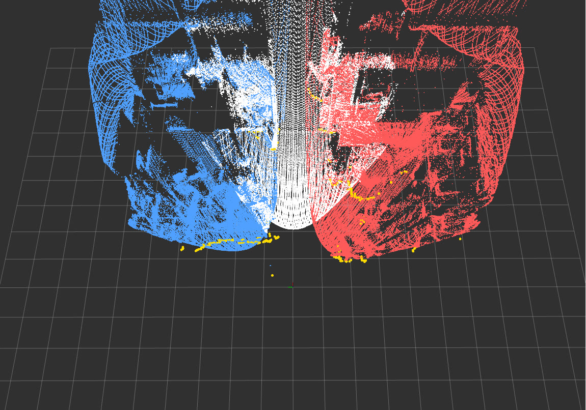

Sensing and calibration
Three Livox Mid-70 lidars merged into one 10 Hz cloud, with lidar and RealSense D455 poses calibrated from floor fits and a scan. After merging, the floor height agreed within 0.3 cm from 0.8 to 3 m for all three lidars.
CMU XRTC Lab · October 2026 to present · In progress
Bring a four-wheel AgileX Scout Mini up under ROS 2 with calibrated sensing and Nav2, on a computer that rides on the robot.
My role Part-time bring-up and debugging on a robot that belongs to the lab. I cabled and calibrated the sensors, wrote the project's ROS 2 package in Python, and ran the tests below. Nav2, slam_toolbox, the base driver and the lidar driver are existing packages that I integrated and tuned. The code is private.

The result so far is a calibrated sensing stack and a Nav2 pipeline that has commanded the real base over short distances. It is not yet a working autonomous navigation system.
Autonomous drives to date are sub-meter indoor goal trials: 0.41 m on October 28 and 0.14 m before a stall on October 31. A map built that day closed its loop with a 5.3 m error and is not used for navigation.
Three Livox Mid-70 lidars merged into one 10 Hz cloud, with lidar and RealSense D455 poses calibrated from floor fits and a scan. After merging, the floor height agreed within 0.3 cm from 0.8 to 3 m for all three lidars.
Camera-only Nav2: depth voxel costmap, NavFn planner, MPPI controller, velocity smoother and collision monitor, driving the base over CAN. The CAN interface comes up by itself at boot.
A door test on the robot stalled. In a Nav2 simulation with a moving fake base, no door from 0.70 to 1.20 m passed at costmap inflation 0.55; at 0.30 every width passed. The cause of the stall on the real robot is still open.
From one ROS 2 bag, each lidar's floor plane showed the sensor tower rolling 5.8 to 12.1 degrees peak to peak while the robot turned, against 0.2 to 0.4 degrees standing still. That finding led to a lower frame design.
Point-to-point navigation has not been shown. The controller ran at 5 to 9 Hz against 20 Hz configured, which has not been investigated. The source of the map error is unconfirmed. A lower replacement frame is designed in CAD with automated assembly checks; it was recorded as not yet built on November 6.
In mid-November the robot's lidar changed to a single Livox Mid-360 on a printed mount. The measurements on this page were made with the earlier three-lidar setup.
Methods: ROS 2 Jazzy, Nav2, slam_toolbox, multi-sensor extrinsic calibration, CAN bring-up, ROS 2 bag analysis, simulation with fake sensors and base.